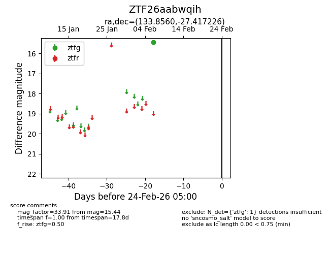
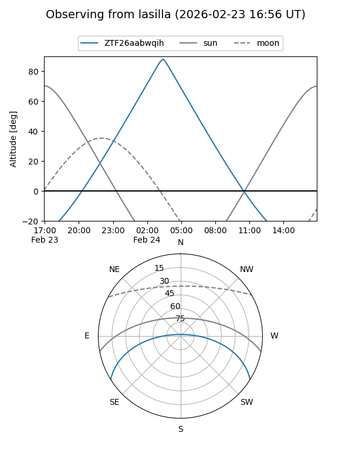
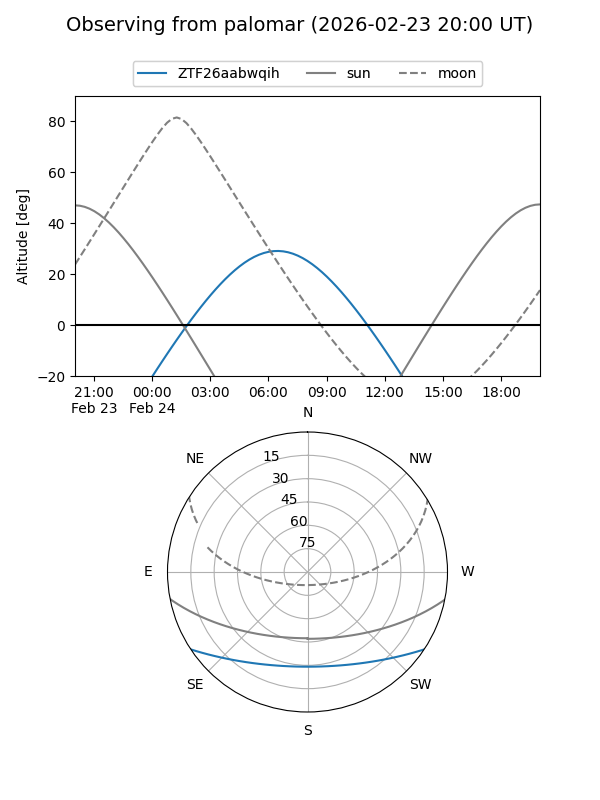

ZTF26aabwqih
Target ZTF26aabwqih at 2026-02-24 09:08
Aliases and brokers:
FINK: link
Lasair: link
ALeRCE: link
alt names
ZTF26aabwqih (ztf,fink_ztf)
Coordinates:
equatorial (ra, dec) = 133.8560,-27.41723
equatorial (HMS+DMS) = 08:55:25.44,-27:25:02.01
galactic (l, b) = (252.0265,+11.35484)
Flags:
Photometry:
last ztfg=15.44
1 ztfg detections
Lightcurve

Visibility


Additional plots